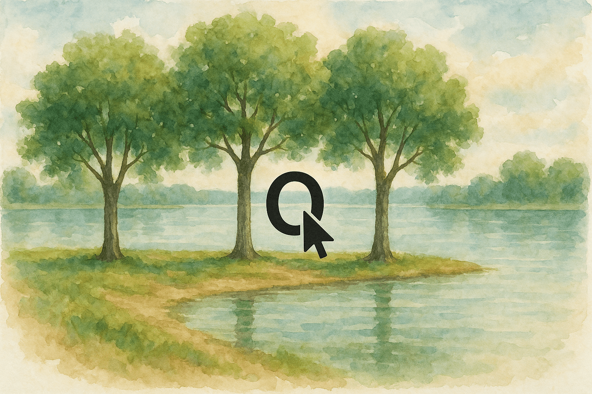

El segundo camino te conduce a un edificio más grande y rectangular, con una arquitectura que inmediatamente te recuerda a una escuela o centro educativo. Al entrar, tus sospechas se confirman: hay un montón de mesas dispuestas en filas ordenadas, cada una con su correspondiente silla, como si fuera un aula gigantesca. Sin embargo, todo lo que ves escrito en las pizarras y papeles esparcidos está en un idioma completamente incomprensible, lleno de símbolos extraños y caracteres que no reconoces.
Las mesas están hechas del mismo material resistente al calor que los edificios, y muchas de ellas tienen grabados y anotaciones que parecen ser ejercicios o tareas de estudiantes. El ambiente es extrañamente nostálgico, como si pudieras sentir el eco de voces jóvenes que una vez llenaron este espacio con preguntas y risas.
Lo que más llama tu atención es una mesa en particular, situada cerca de una ventana que da al paisaje volcánico. Esta mesa está especialmente iluminada por la luz natural que se filtra a través del cristal protector, y sobre su superficie hay un dibujo muy detallado que parece haber sido hecho a mano con gran cuidado. El dibujo muestra una imagen que contrasta completamente con el ambiente volcánico del planeta:
El dibujo es tan detallado y está tan bien conservado que parece casi fuera de lugar en este entorno educativo abandonado. Te preguntas qué significado podría tener para los antiguos habitantes de esta escuela volcánica.